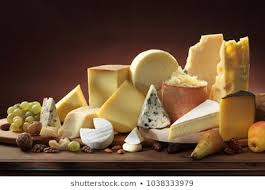

CHEESE ENTHUSIASTS!
Serious Business Inquires Only.
Cheddar Cheese
Cheddar Cheese is one of the most well known cheeses in the world. Cheddar cheese is commonly found in pastas, pizza, cheese boards, and much more! $48

Swiss Cheese
Swiss cheese is a mild cheese with a nut-like taste and sweet flavor. Swiss Cheese can be used in many dishes such as Mac and Cheese, sandwiches, pastas and eaten by itself! Swiss cheese is a household favorite!$70.89

English Cheese
It is a hard, crumbly cheese. Dovedale (Protected Designation of Origin), a full-fat semi-soft blue-veined cheese made from cow's milk. Lanark Blue, Scottish blue cheese made from unpasteurised sheep's milk. Lymeswold was an English cheese variety that is no longer produced. $2,499

Dutch Cheese
Gouda cheese is the most famous, and most produced, Dutch Cheese, followed by Edam, Maasdam, Boerenkaas, Leyden and lesser known cheeses.Cheese is made from the milk of an animal, most often a cow. Around 10 litres of milk are needed to make 1 kilo of Dutch Gouda cheese.$195.99

Tilsit Cheese
Tilsit cheese or Tilsiter cheese is a light yellow semihard smear-ripened cheese, created in the mid-19th century by Prussian-Swiss settlers, the Westphal family, from the Emmental valley. $20.99

Port Salut Cheese
Port Salut is a semi-soft pasteurised cow's milk cheese from Pays de la Loire, France, with a distinctive orange rind and a mild flavour. The cheese is produced in wheels approximately 23 cm in diameter, weighing approximately 2 kg $70.99.

Here is one of my favorite cheese places! Highly Reccomend!
beechershandmadecheese